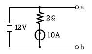
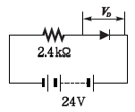
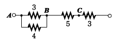
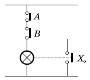

소방설비산업기사(전기) (2005-03-06 기출문제)
1과목: 소방원론
1. 가연물질의 조건으로 옳지 않은 것은?
- 산화하기 쉽고, 산소와 결합시 발열량이 커야 한다.
- 연소반응을 일으키는 활성화 에너지가 커야 한다.
- 열의 축적이 용이하여야 한다.
- 연쇄반응을 일으키기 쉬워야 한다.
(정답률: 75%)

2. 정전기 발생을 억제하기 위한 조치로서 적합하지 않은 것은?
- 공기를 이온화시킨다.
- 상대습도를 70% 이상이 되도록 한다.
- 가솔린 등을 파이프라인을 통하여 수송시 10m/sec 이하의 유속으로 한다.
- 주유시 전도성을 갖는 철사 등을 호스에 넣고 끝을 접지시킨다.
(정답률: 70%)
3. 액체의 발화 위험성의 기준이 되는 것은?
- 인화점
- 착화점
- 비등점
- 연소범위
(정답률: 92%)
4. 자신이 연소하지 않고 다른 가연성 물질이 연소할 수 있도록 도와주는 가스는?
- N2
- O2
- Ar
- CO2
(정답률: 80%)
5. 전기화재의 원인으로 볼 수 없는 것은?
- 승압에 의한 발화
- 과전류에 의한 발화
- 누전에 의한 발화
- 단락에 의한 발화
(정답률: 72%)
6. 연소시 부식성 가스를 가장 많이 방출하는 물질은?
- 폴리에틸렌
- 폴리우레탄
- 폴리스티렌
- 폴리염화비닐
(정답률: 52%)
7. 방화상 유효한 구획 중 일정 규모 이상이면 건축물에 적용되는 방화구획을 하여야 한다. 연소확대 방지를 위한 방화구획의 종류가 아닌 것은?
- 층 또는 면적별 구획
- 승강기의 승강로 구획
- 위험용도별 구획
- 수용인원 단위별 구획
(정답률: 32%)
8. 건축물의 구조내력상 주요한 부분이 아닌 것은?
- 보
- 지붕틀
- 주계단
- 간벽
(정답률: 89%)
9. 미생물의 발열에 의한 자연발화 형태로 옳은 것은?
- 셀룰로이드
- 건성유
- 퇴비
- 활성탄
(정답률: 64%)
10. 다음 중 물속에 저장해야 하는 것으로 옳게 표현한 것은?
- 나트륨, 칼륨
- 칼륨, 이황화탄소
- 이황화탄소, 황린
- 황린, 나트륨
(정답률: 80%)
11. 피난대책의 일반적 원칙이 아닌 것은?
- 2방향 이상의 피난계획을 세운다.
- 피난통로는 간단명료하여야 한다.
- 피난설비는 고정적인 시설에 의하고, 피난기구는 늦어진 소수의 사람들에 대한 예외적인 보조수단이다.
- 피난의 수단으로는 원시적인 방법보다는 최신의 운송설비를 이용하는 것이 원칙이다.
(정답률: 96%)
12. 연기 속에 포함된 유해물질(gas)의 독성 중 인체에 가장 위험한 것은?
- 이산화탄소
- 일산화탄소
- 염소
- 포스겐
(정답률: 57%)
13. 준불연재료란 무엇인가?
- 철근콘크리트조, 연와조 기타 이와 유사한 성능의 재료
- 철망모르타르로 바름두께가 2cm 이상인 것
- 불에 잘 타지 아니하는 성능을 가진 재료
- 불연재료에 준하는 방화성능을 가진 재료
(정답률: 66%)
14. 전기화재가 발생하였을 때 적응시키기 위한 방법이 아닌 것은?
- 무상주수
- 할론소화약제 방사
- 봉상주수
- 분말소화설비
(정답률: 60%)
15. 위험물제조소의 안전장치의 종류로서 적합하지 않은 것은?
- 감압밸브
- 안전밸브
- 자동적으로 압력을 승압시키는 장치
- 릴리프 밸브(Relief valve)
(정답률: 75%)
16. 50BTU의 열량은 몇 cal에 해당하는가?
- 12600
- 15000
- 22600
- 25000
(정답률: 48%)
17. 다음 소화제 중에서 변전실 화재시 적당하지 않은 것은?
- 이산화탄소
- 분말
- 할론
- 포
(정답률: 55%)
18. 소화의 원리에서 소화형태로 볼 수 없는 것은?
- 발열소화
- 화학소화(부촉매효과)
- 희석소화
- 제거소화
(정답률: 86%)
19. 피난에 유효한 건축계획으로서 거리가 먼 것은?
- 2방향 피난로 확보
- 에스컬레이트 설치
- 내장재 불연화
- 안전구획의 확보
(정답률: 94%)
20. 소방관련법령의 위험물 성질에 대한 설명 중 틀린 것은?
- 1류 위험물 : 강산화성 물질
- 2류 위험물 : 상온에서 기체상으로 타기 쉬운 물질
- 3류 위험물 : 금수성 물질
- 4류 위험물 : 가연성, 인화성 액체
(정답률: 49%)
2과목: 소방전기회로
21. 단상 40kVA 변압기 2대로 공급할 수 있는 최대 3상전력은 약 몇 kVA인가?
- 60
- 70
- 80
- 90
(정답률: 45%)
22. 무인운전을 시행하기 위한 제어에 해당되는 것은?
- 정치제어
- 추종제어
- 비율제어
- 프로그램제어
(정답률: 72%)
23. 2위치 조절기로는 별로 사용되지 않는 방식은?
- 공기식
- 전기식
- 전자식
- 유압식
(정답률: 38%)
24. 3상 유도전동기가 회전하는 기본적인 원리는?
- 2전동기설
- 보론델 법칙
- 전자유도작용
- 표피현상
(정답률: 80%)
25. 프로그램제어에서 스캔타임의 계산식은?
- 스텝수＋처리속도
- 스텝수－처리속도
- 스텝수×처리속도
- 스텝수÷처리속도
(정답률: 67%)
26. SCR과 동작특성이 비슷한 것은?
- 전계효과 트랜지스터(FET)
- 사이리스터(Thyristor)
- 터널 다이오드
- 양극성 트랜지스터
(정답률: 67%)
27. 그림과 같은 회로에서 a, b 사이에서 걸리는 전압은 몇 V인가?

- 10
- 12
- 15
- 20
(정답률: 75%)
28. 증폭기에서 발생하는 일그러짐(DISTORTION)의 원인이 아닌 것은?
- 주파수 일그러짐
- 위상 일그러짐
- 비직선 일그러짐
- 잡음(NOISE)
(정답률: 53%)
29. 그림과 같은 회로에서 다이오드 양단의 전압 VD는 몇 V인가? (단, 이상적인 다이오드이다.)

- 0
- 2.4
- 10
- 24
(정답률: 51%)
30. 변압기, 차단기, 유입개폐기, 계기용 변성기 등 고압기기의 철대, 금속제 케이스에 시행하는 접지공사의 종류는?
- 제1종 접지공사
- 제2종 접지공사
- 제3종 접지공사
- 특별 제3종 접지공사
(정답률: 48%)
31. 인덕턴스 L1, L2가 각각 3mH, 6mH인 두 코일 간의 상호 인덕턴스 M이 4mH라고 하면 결합계수 K는 약 얼마인가?
- 0.44
- 0.89
- 0.94
- 1.12
(정답률: 46%)
32. 부피가 일정한 전선을 배의 길이로 늘리면 저항은 몇 배로 되는가?
- m배
- 1/m배
- 1/m2배
- m2배
(정답률: 39%)
33. 변압기의 용량이 4kVA이다. 무유도 전부하에서의 동손은 120W, 철손은 80W이다. 부하가 1/2로 되었을 때의 효율은?
- 80%
- 85%
- 90%
- 95%
(정답률: 26%)
34. 그림과 같은 회로에 흐르는 전전류가 5A이면 AB 사이의 3Ω에 흐르는 전류는 몇 A인가? (단, 각 저항의 단위는 모두 Ω이다.)

- 12/7
- 16/7
- 20/7
- 24/7
(정답률: 47%)
35. 그림과 같은 논리회로는?

- AND회로
- OR회로
- NOT회로
- NAND회로
(정답률: 57%)
36. 저항 4Ω과 유도리액턴스 3Ω이 병렬로 접속된 회로의 임피던스는 몇 Ω인가?
- 1.2
- 2.4
- 3.6
- 5
(정답률: 37%)
37. RLC 직렬회로에서 R=3Ω, XL=8Ω, Xc=4Ω일 때 합성임피던스의 크기는 몇 Ω인가?
- 5
- 7
- 8
- 10
(정답률: 37%)
38. R=40Ω, L=80mH의 코일이 있다. 이 코일에 100V, 60Hz의 전압을 가할 때에 소비되는 전력은 몇 W인가?
- 200
- 160
- 120
- 100
(정답률: 49%)
39. 40℃ 구리선의 저항의 온도계수는 얼마인가? (단, 0℃일 때 구리선의 온도계수는 1/234.5이다.)
- 274.5
- 1/274.5
- 1/234.5
- 234.5
(정답률: 45%)
40. 온도가 상승할 때 고유저항이 작아지는 것은?
- 니크롬
- 구리
- 실리콘
- 수은
(정답률: 42%)
3과목: 소방관계법규
41. 제4류 위험물로서 제1석유류인 아세톤 지정수량은 몇 인가?
- 100ℓ
- 200ℓ
- 300ℓ
- 400ℓ
(정답률: 40%)
42. 차고ㆍ주차 용도로 사용하는 건축물 중 건축허가 등의 동의를 받아야 하는 최소 면적으로 맞는 것은?
- 바닥면적 200m2 이상
- 바닥면적 300m2 이상
- 바닥면적 400m2 이상
- 바닥면적 600m2 이상
(정답률: 64%)
43. 소방시설착공신고의 변경이 있는 경우 변경일로부터 14일 이내에 누구에게 신고하여야 하나?
- 시·도지사
- 행정안전부장관
- 소방청장
- 소방서장 또는 소방본부장
(정답률: 52%)
44. 다음 중 하자보수보증 기간이 3년이 아닌 것은?
- 자동소화장치
- 간이스프링클러설비
- 무선통신보조설비
- 자동화재탐지설비
(정답률: 63%)
45. 특정소방대상물의 규모에 관계없이 물분무등소화설비를 적용할 대상인 것은?
- 관망탑
- 항공관제탑
- 항공기격납고
- 방송용 송수신탑
(정답률: 75%)
46. 화재경계지구 안의 관계인에 대하여 소방상 필요한 소방훈련은 연 몇 회 이상 실시하여야 하는가?
- 1회
- 2회
- 3회
- 4회
(정답률: 65%)
47. 국가가 소방장비의 구입 등 시ㆍ도의 소방업무에 필요한 경비의 일부를 보조하는 국고보조의 대상이 아닌 것은?
- 소방의(소방복장)
- 소방용 헬리콥터
- 소방전용통신설비
- 소방관서용 청사
(정답률: 47%)
48. 방염성능에 대한 기준 중 틀린 것은?
- 버너의 불꽃을 제거한 때부터 불꽃을 올리며 연소하는 상태가 그칠 때까지 시간은 30초 이내
- 탄화한 면적은 50cm2 이내, 탄화한 길이는 20cm 이내
- 불꽃에 의하여 완전히 녹을 때까지 불꽃의 접촉횟수는 3회 이상
- 발연량을 측정하는 경우 최대연기밀도는 400 이하가 될 것
(정답률: 32%)
49. 다음 용어의 정의에 대한 설명 중 바르지 못한 것은?
- 피난층이란 곧바로 지상으로 갈 수는 없지만 출입구가 있는 층을 의미한다.
- 비상구란 화재발생시 지상 또는 안전한 장소로 피난할 수 있는 가로 75cm, 세로 150cm이상 크기의 출입구를 의미한다.
- 무창층이란 개구부의 합계의 면적이 해당 층의 바닥면적의 30분의 1 이하가 되는 층을 의미한다.
- 실내장식물이란 건축물 내부의 미관 또는 장식을 위하여 천장 또는 벽에 설치하는 것으로서 가구류·집기류를 제외한다.
(정답률: 70%)
50. 소방기본법상 벌칙으로 5년 이하의 징역 또는 3000만원 이하의 벌금에 해당하지 않는 것은?
- 소방자동차의 출동을 방해한 자
- 강제처분에 방해하거나 따르지 아니한 자
- 화재 등 현장에서 사람을 구출하거나 불을 끄거나 불이 번지지 아니하도록 하는 일을 방해한 자
- 정당한 사유없이 소방용수시설의 효용을 해하거나 방해한 자
(정답률: 45%)
51. 다음 중 화재경계지구의 지정권자는?
- 시·도지사
- 소방본부장
- 소방서장
- 경찰서장
(정답률: 72%)
52. 화재예방상 필요하다고 인정되거나 화재위험경보시 발령하는 소방신호의 종류로 맞는 것은?
- 경계신호
- 발화신호
- 경보신호
- 훈련신호
(정답률: 53%)
53. 건축허가 등의 동의요구시 동의요구서에 첨부하여야 할 서류가 아닌 것은?
- 건축허가 신청서 및 건축허가서
- 설계도서 및 소방시설 설치계획표
- 소방시설설계업 등록증
- 소방시설공사업 등록증
(정답률: 56%)
54. 소방용수시설용 소방용수표지의 설치기준으로 틀린 것은?
- 시·도지사가 설치한다.
- 문자는 청색, 내측 바탕은 백색, 외측 바탕은 적색으로 하고 반드시 반사도료를 사용할 것
- 맨홀 뚜껑 부근에는 황색 반사도료로 폭15cm의 선을 그 둘레를 따라 칠할 것
- 지하에 설치하는 소화전 또는 저수조의 경우 맨홀 뚜껑은 지름 648mm 이상의 것으로 하되, 그 뚜껑에는 소화전·주차금지 또는 저수조·주차금지의 표시를 할 것
(정답률: 42%)
55. 다음 중 소화활동설비에 해당하는 것은?
- 옥내소화전설비
- 무선통신보조설비
- 통합감시시설
- 방열복
(정답률: 31%)
56. 물분무등소화설비를 설치하여야 하는 차고ㆍ주차장에 어느 설비를 화재안전기준에 적합하게 설치한 경우 물분무등소화설비를 면제하는가?
- 옥내소화전설비
- 스프링클러설비
- 간이 스프링클러설비
- 청정소화약제 소화설비
(정답률: 73%)
57. 소방안전관리대상물의 소방안전관리자로 선임된 자가 실시하여야 할 업무가 아닌 것은?
- 소방계획서의 작성
- 자위소방대의 조직
- 소방시설 교육
- 소방훈련 및 교육
(정답률: 42%)
58. 소화난이도 등급 Ⅰ의 옥내 탱크 저장소에서 유황을 저장ㆍ취급할 경우 설치 가능한 소화설비는?
- 물분무소화설비
- 스프링클러설비
- 포소화설비
- 옥내소화전설비
(정답률: 34%)
59. 소화난이도 등급 Ⅲ의 지하 탱크 저장소에 설치하여야 할 설비는?
- 대형 소화기 1개 이상
- 대형 소화기 2개 이상
- 능력단위의 수치가 3단위 이상인 소형 소화기 2개 이상
- 능력단위의 수치가 3단위 이상인 소형 소화기 3개 이상
(정답률: 42%)
60. 위험물제조소 등에 옥내소화전설비를 설치하려한다. 가장 많이 설치되는 층의 옥내소화전의 개수가 6개일 경우 필요한 수원의 수량은 얼마 이상이어야 하는가?
- 13m3 이상
- 15.6m3 이상
- 39m3 이상
- 46.8m3 이상
(정답률: 32%)
4과목: 소방전기시설의 구조 및 원리
61. 객석유도등의 설치위치가 아닌 것은?
- 객석의 통로
- 객석의 바닥
- 객석의 천장
- 객석의 벽
(정답률: 69%)
62. 다음 중 20m 이상 높이에 설치할 수 없는 감지기는?
- 광전식 분리형 아날로그 방식
- 광전식 공기흡입형 아날로그 방식
- 복합형 감지기
- 불꽃감지기
(정답률: 36%)
63. 연기감지기 설치기준에 관한 설명 중 맞는 것은 어느 것인가?
- 감지기는 복도 및 통로에 있어서는 보행거리 20m(3종에 있어서는 10m)마다 설치한다.
- 계단 및 경사로에 있어서는 수직거리 15m(3종에 있어서는 10m)마다 1개 이상으로 설치한다.
- 감지기는 벽 또는 보로부터 1m 이상 떨어진곳에 설치한다.
- 천장 또는 반자가 낮은 실내 또는 좁은 실내에 있어서는 출입구의 먼 부분에 설치한다.
(정답률: 53%)
64. 비상경보설비 설치기준 중 틀린 것은?
- 부식성 가스 또는 습기로 인하여 부식의 우려가 없는 장소에 설치하여야 한다.
- 음향장치는 정격전압의 80% 전압에서 음향을 발할 수 있어야 한다.
- 음향장치의 음량은 부착된 음향장치의 중심으로부터 1m 떨어진 위치에서 90dB 이상이어야 한다.
- 지구음향장치는 소방설비 작동상태를 감시하는 중앙방재센터에 설치한다.
(정답률: 54%)
65. 무선통신보조설비에 쓰이는 장치로서 신호의 전송로가 분기되는 장소에 설치하는 것으로 임피던스 매칭(Matching)과 신호 균등분배를 위해사용하는 장치를 무엇이라고 하는가?
- 분파기
- 혼합기
- 분배기
- 누설동축케이블
(정답률: 79%)
66. 다음은 전압 크기를 나타낸 용어의 정의이다. 맞는 것은?
- 저압이란 직류 600V 이하를 말한다.
- 저압이란 교류 750V 이하를 말한다.
- 고압이란 직류 600V, 교류 750V를 넘고 7000V 이하인 것을 말한다.
- 특고압이란 7000V 초과를 말한다.
(정답률: 62%)
67. 비상방송설비의 주요 구성장치가 아닌 것은?
- 확성기
- 증폭기
- 발신기
- 음량조절기
(정답률: 52%)
68. 비상전원에서 유도등은 몇 분 이상 유효하게 작동시킬 수 있는 용량으로 하여야 하는가?
- 10분
- 20분
- 30분
- 40분
(정답률: 77%)
69. 유도표지의 표지면 휘도는 주위조도 0 lx에서 60분간 발광 후 몇 mcd/m2 이상으로 하여야 하는가?
- 5
- 10
- 14
- 7
(정답률: 44%)
70. 누전경보기에 사용하는 영상변류기를 분류할 때 바르지 않은 것은?
- 정격전류에 따라 1급과 2급으로 나뉜다.
- 구조에 따라 옥내형과 옥외형으로 나뉜다.
- 구성에 따라 관통형과 분할형으로 나뉜다.
- 수신기와의 호환성 여부에 따라 호환성형과 비호환성형으로 나뉜다.
(정답률: 25%)
71. 비상조명등의 조도는 그것이 설치된 각 부분의 바닥에서 몇 lx 이상 되어야 하는가?
- 0.5 lx
- 1.0 lx
- 1.5 lx
- 3.0 lx
(정답률: 68%)
72. 지하층에 있는 의료시설ㆍ노유자시설에 적응성이 있는 피난기구는?
- 완강기
- 피난용 트랩
- 공기안전매트
- 피난사다리
(정답률: 73%)
73. 휴대용 비상조명등은 백화점, 쇼핑센터에 설치하는 경우 보행거리 몇 m마다 몇 개 이상을 설치하여야 하는가?
- 25, 1
- 50, 1
- 25, 3
- 50, 3
(정답률: 48%)
74. 무선통신보조설비의 누설동축케이블 본체가 떨어지지 않도록 고정시켜야 하는 최소거리는?
- 3m
- 4m
- 5m
- 6m
(정답률: 50%)
75. 사람이 근무하지 아니하는 시간에는 무인경비시스템으로 관리하는 업무시설의 경우 바닥면적이 얼마 이상이면 자동화재속보설비를 설치해야 하는가?
- 500m2
- 1000m2
- 1500m2
- 2000m2
(정답률: 40%)
76. 누전경보기의 화재안전기준에 있어서 누전경보기 설치방법 중 틀린 것은?
- 경계전로의 정격전류가 60A를 초과시 1급 누전경보기를 설치한다.
- 경계전로의 정격전류가 60A 이하시 1급 또는 2급 누전경보기를 설치한다.
- 전원은 분전반으로부터 전용회로로 한다.
- 전원은 각 극에 개폐기 및 30A 이하의 과전류 차단기를 설치한다.
(정답률: 72%)
77. 비상방송설비의 축전지설비는 몇 분간 감시상태를 지속할 수 있어야 하는가?
- 20분
- 30분
- 50분
- 60분
(정답률: 58%)
78. 정온식 감지선형 감지기 설치기준에 대한 설명 중 적합한 것은?
- 단자부와 마감 고정 금구와의 설치간격은 5cm 이내로 설치한다.
- 감지선형 감지기의 굴곡반경은 10cm 이상으로 한다.
- 감지기와 감지구역 각 부분과의 수평거리가 내화구조의 경우 1종은 3m 이하, 2종은 1m 이하로 한다.
- 분전반 내부에 설치하는 경우 접착제를 이용하여 돌기를 바닥에 고정시키고 그곳에 감지기를 설치한다.
(정답률: 52%)
79. 광전식 분리형 감지기 광축의 높이가 천장등 높이의 몇 % 이상이어야 하는가?
- 70%
- 80%
- 90%
- 100%
(정답률: 78%)
80. 비상콘센트설비는 하나의 전용회로에 설치하는 비상콘센트의 수가 몇 개 이하로 설치되어야 하는가?
- 5개
- 10개
- 15개
- 20개
(정답률: 68%)